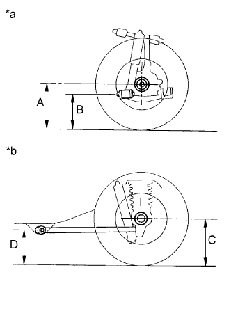
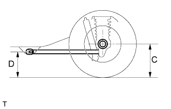
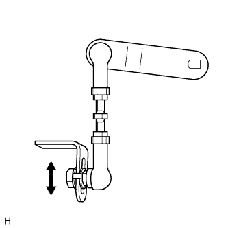
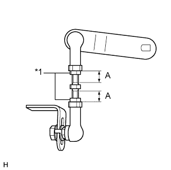

СИСТЕМА УПРАВЛЕНИЯ ПОДВЕСКОЙ (для моделей с пневматической подвеской) > ПРОВЕРКА БЕЗ СНЯТИЯ С АВТОМОБИЛЯ |
| 1. ПРОВЕРЬТЕ ШИНЫ |
Проверьте износ и давление накачки шин.
| Участок | Размер шин | Переднее кПа (кгс/см2, фунтов на кв. дюйм) | Заднее кПа (кгс/см2, фунтов на кв. дюйм) |
| Европа | 245/70R17 110S | 220 (2,2, 32) | 220 (2,2, 32) |
| 265/65R17 112S | 220 (2,2, 32) | 220 (2,2, 32) | |
| 265/60R18 110H | 220 (2,2, 32) | 220 (2,2, 32) | |
| Восточная Европа и Россия | 245/70R17 110S | 200 (2,0, 29) | 200 (2,0, 29) |
| 265/65R17 112S | 200 (2,0, 29) | 200 (2,0, 29) | |
| 265/60R18 110H | 200 (2,0, 29) | 200 (2,0, 29) | |
| Общая группа стран Австралия Страны Персидского залива | 245/70R17 110S | 200 (2,0, 29) | 200 (2,0, 29) |
| 265/65R17 112S | 200 (2,0, 29) | 200 (2,0, 29) | |
| 265/60R18 110H | 200 (2,0, 29) | 200 (2,0, 29) |
 |
С помощью индикатора часового типа проверьте биение шины.
| 2. УСТАНОВИТЕ СТАНДАРТНУЮ ВЫСОТУ АВТОМОБИЛЯ |
Освободите стояночный тормоз и стабилизируйте подвеску, покачав автомобиль за углы.
Установите рычаг переключения передач в положение N и стабилизируйте положения шин, перемещая автомобиль вперед-назад.
Запустите двигатель.
Используя переключатель регулировки высоты, поднимите, а затем опустите автомобиль. Выполните эту операцию дважды.
| 3. ПРОВЕРЬТЕ ВЫСОТУ АВТОМОБИЛЯ |
|  |
Несколько раз нажмите на автомобиль, чтобы стабилизировать подвеску, а затем измерьте высоту автомобиля.
| *a | Передняя сторона |
| *b | Задняя сторона |
| Модель автомобиля | Модификация | Вместимость кузова | Параметр / Устройство | Спереди (A-B) | Сзади (C-D) |
| KDJ150L-GKAEY | TX | 5 мест | - | 76,2 мм (3,00 дюйма) | 54,3 мм (2,14 дюйма) |
| Для моделей с двойным баком | 75,3 мм (2,96 дюйма) | 56,5 мм (2,22 дюйма) | |||
| 7 мест | - | 77,3 мм (3,04 дюйма) | 55,5 мм (2,19 дюйма) | ||
| Для моделей с двойным баком | 76,4 мм (3,01 дюйма) | 57,5 мм (2,26 дюйма) | |||
| 9 мест | - | 76,2 мм (3,00 дюйма) | 53,8 мм (2,19 дюйма) | ||
| Для моделей с двойным баком | 75,3 мм (2,96 дюйма) | 55,8 мм (2,20 дюйма) | |||
| TXL | 5 мест | - | 75,2 мм (2,96 дюйма) | 55,5 мм (2,19 дюйма) | |
| Для моделей с двойным баком | 74,3 мм (2,93 дюйма) | 57,6 мм (2,27 дюйма) | |||
| 7 мест | - | 76,3 мм (3,00 дюйма) | 56,6 мм (2,23 дюйма) | ||
| Для моделей с двойным баком | 75,3 мм (2,96 дюйма) | 58,5 мм (2,30 дюйма) | |||
| 9 мест | - | 75,2 мм (2,96 дюйма) | 54,9 мм (2,16 дюйма) | ||
| Для моделей с двойным баком | 74,3 мм (2,93 дюйма) | 56,9 мм (2,24 дюйма) | |||
| VX | 5 мест | - | 82,5 мм (3,25 дюйма) | 58,0 мм (2,28 дюйма) | |
| Для моделей с двойным баком | 81,6 мм (3,21 дюйма) | 59,9 мм (2,36 дюйма) | |||
| 7 мест | - | 83,5 мм (3,29 дюйма) | 58,9 мм (2,32 дюйма) | ||
| Для моделей с двойным баком | 82,7 мм (3,26 дюйма) | 59,9 мм (2,36 дюйма) | |||
| VXL | 7 мест | - | 82,2 мм (3,24 дюйма) | 66,6 мм (2,62 дюйма) | |
| Для моделей с двойным баком | 81,5 мм (3,21 дюйма) | 66,2 мм (2,61 дюйма) | |||
| KDJ150L-GKFEY | TX | 5 мест | - | 75,0 мм (2,95 дюйма) | 54,0 мм (2,13 дюйма) |
| Для моделей с двойным баком | 74,1 мм (2,92 дюйма) | 56,2 мм (2,21 дюйма) | |||
| 7 мест | - | 76,1 мм (3,00 дюйма) | 55,2 мм (2,17 дюйма) | ||
| Для моделей с двойным баком | 75,2 мм (2,96 дюйма) | 57,3 мм (2,26 дюйма) | |||
| 9 мест | - | 75,0 мм (2,95 дюйма) | 53,4 мм (2,10 дюйма) | ||
| Для моделей с двойным баком | 74,0 мм (2,91 дюйма) | 55,5 мм (2,19 дюйма) | |||
| TXL | 5 мест | - | 76,1 мм (3,00 дюйма) | 55,4 мм (2,18 дюйма) | |
| Для моделей с двойным баком | 75,2 мм (2,96 дюйма) | 57,5 мм (2,26 дюйма) | |||
| 7 мест | - | 76,0 мм (2,99 дюйма) | 56,2 мм (2,21 дюйма) | ||
| Для моделей с двойным баком | 75,0 мм (2,95 дюйма) | 58,1 мм (2,29 дюйма) | |||
| 9 мест | - | 76,1 мм (3,00 дюйма) | 54,7 мм (2,15 дюйма) | ||
| Для моделей с двойным баком | 75,2 мм (2,96 дюйма) | 56,8 мм (2,24 дюйма) | |||
| VX | 5 мест | - | 81,3 мм (3,20 дюйма) | 57,2 мм (2,25 дюйма) | |
| Для моделей с двойным баком | 80,4 мм (3,17 дюйма) | 59,2 мм (2,33 дюйма) | |||
| 7 мест | - | 82,4 мм (3,24 дюйма) | 58,2 мм (2,29 дюйма) | ||
| Для моделей с двойным баком | 81,6 мм (3,21 дюйма) | 59,1 мм (2,33 дюйма) | |||
| VXL | 7 мест | - | 81,0 мм (3,19 дюйма) | 66,3 мм (2,61 дюйма) | |
| Для моделей с двойным баком | 80,3 мм (3,16 дюйма) | 65,9 мм (2,59 дюйма) | |||
| KDJ150R-GKAEY | TX | 5 мест | - | 77,2 мм (3,04 дюйма) | 54,5 мм (2,15 дюйма) |
| Для моделей с двойным баком | 76,3 мм (3,00 дюйма) | 56,7 мм (2,23 дюйма) | |||
| 7 мест | - | 78,2 мм (3,08 дюйма) | 55,7 мм (2,19 дюйма) | ||
| Для моделей с двойным баком | 77,3 мм (3,04 дюйма) | 57,8 мм (2,28 дюйма) | |||
| 9 мест | - | 77,2 мм (3,04 дюйма) | 53,9 мм (2,12 дюйма) | ||
| Для моделей с двойным баком | 76,3 мм (3,00 дюйма) | 56,0 мм (2,20 дюйма) | |||
| TXL | 5 мест | - | 78,2 мм (3,08 дюйма) | 56,4 мм (2,22 дюйма) | |
| Для моделей с двойным баком | 77,3 мм (3,04 дюйма) | 58,5 мм (2,30 дюйма) | |||
| 7 мест | - | 79,3 мм (3,12 дюйма) | 57,5 мм (2,26 дюйма) | ||
| Для моделей с двойным баком | 78,3 мм (3,08 дюйма) | 59,4 мм (2,34 дюйма) | |||
| 9 мест | - | 78,2 мм (3,08 дюйма) | 55,7 мм (2,19 дюйма) | ||
| Для моделей с двойным баком | 77,3 мм (3,04 дюйма) | 57,7 мм (2,27 дюйма) | |||
| VX | 5 мест | - | 82,5 мм (3,25 дюйма) | 58,0 мм (2,28 дюйма) | |
| Для моделей с двойным баком | 81,6 мм (3,21 дюйма) | 59,9 мм (2,36 дюйма) | |||
| 7 мест | - | 83,6 мм (3,29 дюйма) | 59,0 мм (2,32 дюйма) | ||
| Для моделей с двойным баком | 82,8 мм (3,26 дюйма) | 59,9 мм (2,36 дюйма) | |||
| VXL | 7 мест | - | 82,2 мм (3,24 дюйма) | 66,6 мм (2,62 дюйма) | |
| Для моделей с двойным баком | 81,5 мм (3,21 дюйма) | 66,2 мм (2,61 дюйма) | |||
| KDJ150R-GKFEY | TX | 5 мест | - | 77,9 мм (3,07 дюйма) | 54,6 мм (2,15 дюйма) |
| Для моделей с двойным баком | 76,9 мм (3,03 дюйма) | 56,8 мм (2,24 дюйма) | |||
| 7 мест | - | 78,9 мм (3,11 дюйма) | 55,9 мм (2,20 дюйма) | ||
| Для моделей с двойным баком | 78,0 мм (3,07 дюйма) | 57,8 мм (2,28 дюйма) | |||
| TXL | 5 мест | - | 74,2 мм (2,92 дюйма) | 55,3 мм (2,18 дюйма) | |
| Для моделей с двойным баком | 73,3 мм (2,89 дюйма) | 57,4 мм (2,26 дюйма) | |||
| 7 мест | - | 75,3 мм (2,96 дюйма) | 56,4 мм (2,22 дюйма) | ||
| Для моделей с двойным баком | 74,3 мм (2,93 дюйма) | 58,3 мм (2,30 дюйма) | |||
| VX | 5 мест | - | 82,5 мм (3,25 дюйма) | 58,0 мм (2,28 дюйма) | |
| Для моделей с двойным баком | 81,6 мм (3,21 дюйма) | 59,9 мм (2,36 дюйма) | |||
| 7 мест | - | 83,6 мм (3,29 дюйма) | 59,0 мм (2,32 дюйма) | ||
| Для моделей с двойным баком | 82,8 мм (3,26 дюйма) | 59,9 мм (2,36 дюйма) | |||
| VXL | 7 мест | - | 82,2 мм (3,24 дюйма) | 66,6 мм (2,62 дюйма) | |
| Для моделей с двойным баком | 81,5 мм (3,21 дюйма) | 66,2 мм (2,61 дюйма) | |||
| GRJ150L-GKAEK | TX | 5 мест | - | 73,3 мм (2,89 дюйма) | 52,9 мм (2,08 дюйма) |
| Для моделей с двойным баком | 72,4 мм (2,85 дюйма) | 54,6 мм (2,15 дюйма) | |||
| 7 мест | - | 74,5 мм (2,93 дюйма) | 54,1 мм (2,13 дюйма) | ||
| Для моделей с двойным баком | 73,5 мм (2,89 дюйма) | 55,6 мм (2,19 дюйма) | |||
| 9 мест | - | 73,3 мм (2,89 дюйма) | 52,3 мм (2,06 дюйма) | ||
| Для моделей с двойным баком | 72,4 мм (2,85 дюйма) | 54,0 мм (2,13 дюйма) | |||
| TXL | 5 мест | - | 74,5 мм (2,93 дюйма) | 54,5 мм (2,15 дюйма) | |
| Для моделей с двойным баком | 73,6 мм (2,90 дюйма) | 56,2 мм (2,21 дюйма) | |||
| 7 мест | - | 75,6 мм (2,98 дюйма) | 55,6 мм (2,19 дюйма) | ||
| Для моделей с двойным баком | 74,7 мм (2,94 дюйма) | 57,1 мм (2,25 дюйма) | |||
| 9 мест | - | 74,5 мм (2,93 дюйма) | 53,9 мм (2,12 дюйма) | ||
| Для моделей с двойным баком | 73,6 мм (2,90 дюйма) | 55,5 мм (2,19 дюйма) | |||
| VX | 5 мест | - | 79,9 мм (3,15 дюйма) | 56,6 мм (2,23 дюйма) | |
| Для моделей с двойным баком | 79,1 мм (3,11 дюйма) | 58,2 мм (2,29 дюйма) | |||
| 7 мест | - | 81,0 мм (3,19 дюйма) | 57,6 мм (2,27 дюйма) | ||
| Для моделей с двойным баком | 80,2 мм (3,16 дюйма) | 58,1 мм (2,29 дюйма) | |||
| VXL | 7 мест | - | 79,6 мм (3,13 дюйма) | 65,8 мм (2,59 дюйма) | |
| Для моделей с двойным баком | 78,9 мм (3,11 дюйма) | 65,4 мм (2,57 дюйма) | |||
| GRJ150L-GKFEK | TX | 5 мест | - | 72,6 мм (2,86 дюйма) | 52,7 мм (2,07 дюйма) |
| Для моделей с двойным баком | 71,6 мм (2,82 дюйма) | 54,4 мм (2,14 дюйма) | |||
| 7 мест | - | 73,7 мм (2,90 дюйма) | 53,9 мм (2,12 дюйма) | ||
| Для моделей с двойным баком | 72,7 мм (2,86 дюйма) | 55,4 мм (2,18 дюйма) | |||
| 9 мест | - | 72,5 мм (2,85 дюйма) | 52,1 мм (2,05 дюйма) | ||
| Для моделей с двойным баком | 71,6 мм (2,82 дюйма) | 53,8 мм (2,12 дюйма) | |||
| TXL | 5 мест | - | 73,7 мм (2,90 дюйма) | 54,0 мм (2,13 дюйма) | |
| Для моделей с двойным баком | 72,8 мм (2,87 дюйма) | 55,9 мм (2,20 дюйма) | |||
| 7 мест | - | 74,9 мм (2,95 дюйма) | 55,2 мм (2,17 дюйма) | ||
| Для моделей с двойным баком | 73,9 мм (2,91 дюйма) | 56,7 мм (2,23 дюйма) | |||
| 9 мест | - | 73,7 мм (2,90 дюйма) | 53,4 мм (2,10 дюйма) | ||
| Для моделей с двойным баком | 72,8 мм (2,87 дюйма) | 55,0 мм (2,17 дюйма) | |||
| VX | 5 мест | - | 82,5 мм (3,25 дюйма) | 56,6 мм (2,23 дюйма) | |
| Для моделей с двойным баком | 81,6 мм (3,21 дюйма) | 58,2 мм (2,29 дюйма) | |||
| 7 мест | - | 83,6 мм (3,29 дюйма) | 57,7 мм (2,27 дюйма) | ||
| Для моделей с двойным баком | 82,8 мм (3,26 дюйма) | 58,2 мм (2,29 дюйма) | |||
| VXL | 7 мест | - | 82,1 мм (3,23 дюйма) | 66,3 мм (2,61 дюйма) | |
| Для моделей с двойным баком | 81,4 мм (3,20 дюйма) | 65,9 мм (2,59 дюйма) | |||
| LJ150L-GKMEE | TX | 5 мест | - | 74,1 мм (2,92 дюйма) | 53,8 мм (2,12 дюйма) |
| Для моделей с двойным баком | 73,7 мм (2,90 дюйма) | 51,1 мм (2,01 дюйма) | |||
| 7 мест | - | 75,2 мм (2,96 дюйма) | 55,0 мм (2,17 дюйма) | ||
| Для моделей с двойным баком | 74,2 мм (2,92 дюйма) | 57,0 мм (2,24 дюйма) | |||
| 9 мест | - | 74,2 мм (2,92 дюйма) | 52,8 мм (2,08 дюйма) | ||
| Для моделей с двойным баком | 73,2 мм (2,88 дюйма) | 54,9 мм (2,16 дюйма) | |||
| TXL | 5 мест | - | 74,7 мм (2,94 дюйма) | 56,6 мм (2,23 дюйма) | |
| Для моделей с двойным баком | 73,8 мм (2,91 дюйма) | 58,6 мм (2,31 дюйма) | |||
| 7 мест | - | 75,8 мм (2,98 дюйма) | 57,6 мм (2,27 дюйма) | ||
| Для моделей с двойным баком | 74,9 мм (2,95 дюйма) | 59,5 мм (2,34 дюйма) | |||
| 9 мест | - | 74,8 мм (2,94 дюйма) | 55,4 мм (2,18 дюйма) | ||
| Для моделей с двойным баком | 73,9 мм (2,91 дюйма) | 57,4 мм (2,26 дюйма) | |||
| LJ150R-GKMEE | TX | 5 мест | - | 76,0 мм (2,99 дюйма) | 53,6 мм (2,11 дюйма) |
| Для моделей с двойным баком | 75,1 мм (2,96 дюйма) | 55,8 мм (2,20 дюйма) | |||
| 7 мест | - | 77,1 мм (3,04 дюйма) | 54,9 мм (2,16 дюйма) | ||
| Для моделей с двойным баком | 76,2 мм (3,00 дюйма) | 56,9 мм (2,24 дюйма) | |||
| 9 мест | - | 76,1 мм (3,00 дюйма) | 52,6 мм (2,07 дюйма) | ||
| Для моделей с двойным баком | 75,2 мм (2,96 дюйма) | 54,5 мм (2,15 дюйма) | |||
| TXL | 5 мест | - | 76,4 мм (3,01 дюйма) | 56,4 мм (2,22 дюйма) | |
| Для моделей с двойным баком | 75,4 мм (2,97 дюйма) | 58,5 мм (2,30 дюйма) | |||
| 7 мест | - | 77,5 мм (3,05 дюйма) | 57,4 мм (2,26 дюйма) | ||
| Для моделей с двойным баком | 76,5 мм (3,01 дюйма) | 59,3 мм (2,33 дюйма) | |||
| 9 мест | - | 76,4 мм (3,01 дюйма) | 55,2 мм (2,17 дюйма) | ||
| Для моделей с двойным баком | 75,8 мм (2,98 дюйма) | 57,3 мм (2,26 дюйма) | |||
| TRJ150L-GKPEK | TX | 5 мест | - | 75,0 мм (2,95 дюйма) | 52,5 мм (2,07 дюйма) |
| Для моделей с двойным баком | 74,0 мм (2,91 дюйма) | 54,2 мм (2,13 дюйма) | |||
| 7 мест | - | 76,2 мм (3,00 дюйма) | 53,8 мм (2,12 дюйма) | ||
| Для моделей с двойным баком | 75,2 мм (2,96 дюйма) | 55,3 мм (2,18 дюйма) | |||
| 9 мест | - | 75,0 мм (2,95 дюйма) | 51,7 мм (2,04 дюйма) | ||
| TXL | 5 мест | - | 75,7 мм (2,98 дюйма) | 55,1 мм (2,17 дюйма) | |
| Для моделей с двойным баком | 74,8 мм (2,94 дюйма) | 56,6 мм (2,23 дюйма) | |||
| 7 мест | - | 76,9 мм (3,03 дюйма) | 56,2 мм (2,21 дюйма) | ||
| Для моделей с двойным баком | 76,0 мм (2,99 дюйма) | 57,6 мм (2,27 дюйма) | |||
| 9 мест | - | 75,8 мм (2,98 дюйма) | 53,9 мм (2,12 дюйма) | ||
| TRJ150L-GKMEK | TX | 5 мест | - | 74,9 мм (2,95 дюйма) | 53,2 мм (2,09 дюйма) |
| Для моделей с двойным баком | 73,9 мм (2,91 дюйма) | 55,0 мм (2,17 дюйма) | |||
| 7 мест | - | 76,0 мм (2,99 дюйма) | 54,5 мм (2,15 дюйма) | ||
| Для моделей с двойным баком | 75,1 мм (2,96 дюйма) | 56,0 мм (2,20 дюйма) | |||
| TXL | 5 мест | - | 75,6 мм (2,98 дюйма) | 55,8 мм (2,20 дюйма) | |
| Для моделей с двойным баком | 74,7 мм (2,94 дюйма) | 57,4 мм (2,26 дюйма) | |||
| 7 мест | - | 76,9 мм (3,03 дюйма) | 56,4 мм (2,22 дюйма) | ||
| Для моделей с двойным баком | 75,9 мм (2,99 дюйма) | 57,9 мм (2,28 дюйма) | |||
| TRJ150R-GKMEK | TX | 5 мест | - | 74,0 мм (2,91 дюйма) | 52,0 мм (2,05 дюйма) |
| Для моделей с двойным баком | 73,0 мм (2,87 дюйма) | 53,8 мм (2,12 дюйма) | |||
| 7 мест | - | 75,2 мм (2,96 дюйма) | 53,3 мм (2,10 дюйма) | ||
| Для моделей с двойным баком | 74,2 мм (2,92 дюйма) | 54,9 мм (2,16 дюйма) | |||
| TXL | 5 мест | - | 74,4 мм (2,93 дюйма) | 54,5 мм (2,15 дюйма) | |
| Для моделей с двойным баком | 73,5 мм (2,89 дюйма) | 56,2 мм (2,21 дюйма) | |||
| 7 мест | - | 75,6 мм (2,98 дюйма) | 55,1 мм (2,17 дюйма) | ||
| Для моделей с двойным баком | 74,6 мм (2,94 дюйма) | 57,1 мм (2,25 дюйма) | |||
| KDJ150L-GKAEYW | TX | 2 места | - | 79,6 мм (3,13 дюйма) | 52,3 мм (2,06 дюйма) |
| Для автомобилей, предназначенных для эксплуатации в холодном климате | 81,6 мм (3,21 дюйма) | 52,9 мм (2,08 дюйма) | |||
| 5 мест | - | 80,7 мм (3,18 дюйма) | 55,5 мм (2,19 дюйма) | ||
| Без запасного колеса | 79,7 мм (3,14 дюйма) | 51,0 мм (2,01 дюйма) | |||
| Для автомобилей, предназначенных для эксплуатации в холодном климате | 82,9 мм (3,26 дюйма) | 56,1 мм (2,21 дюйма) | |||
| 7 мест | - | 81,8 мм (3,22 дюйма) | 56,7 мм (2,23 дюйма) | ||
| Для автомобилей, предназначенных для эксплуатации в холодном климате | 83,9 мм (3,30 дюйма) | 57,3 мм (2,26 дюйма) | |||
| TXL | 2 места | - | 80,6 мм (3,17 дюйма) (*1) 80,7 мм (3,18 дюйма) (*2) | 54,1 мм (2,13 дюйма) (*1) 54,2 мм (2,13 дюйма) (*2) | |
| Для автомобилей, предназначенных для эксплуатации в холодном климате | 82,1 мм (3,23 дюйма) | 54,6 мм (2,15 дюйма) | |||
| 5 мест | - | 81,5 мм (3,21 дюйма) | 57,5 мм (2,26 дюйма) | ||
| Для автомобилей, предназначенных для эксплуатации в холодном климате | 83,6 мм (3,29 дюйма) | 58,1 мм (2,29 дюйма) | |||
| 7 мест | - | 82,5 мм (3,25 дюйма) | 58,6 мм (2,31 дюйма) | ||
| Для автомобилей, предназначенных для эксплуатации в холодном климате | 84,6 мм (3,33 дюйма) | 59,2 мм (2,33 дюйма) | |||
| VX | 5 мест | - | 81,6 мм (3,21 дюйма) (*1) 81,5 мм (3,21 дюйма) (*2) | 58,3 мм (2,30 дюйма) (*1) 58,2 мм (2,29 дюйма) (*2) | |
| Для автомобилей, предназначенных для эксплуатации в холодном климате | 82,1 мм (3,23 дюйма) | 58,6 мм (2,31 дюйма) (*1) 58,5 мм (2,30 дюйма) (*2) | |||
| 7 мест | - | 82,6 мм (3,25 дюйма) | 59,3 мм (2,33 дюйма) (*1) 59,2 мм (2,33 дюйма) (*2) | ||
| Для автомобилей, предназначенных для эксплуатации в холодном климате | 83,1 мм (3,27 дюйма) | 59,6 мм (2,35 дюйма) (*1) 59,5 мм (2,34 дюйма) (*2) | |||
| VXL | 5 мест | - | 80,8 мм (3,18 дюйма) (*1) 80,7 мм (3,18 дюйма) (*2) | 66,6 мм (2,62 дюйма) (*1) 66,4 мм (2,61 дюйма) (*2) | |
| Для автомобилей, предназначенных для эксплуатации в холодном климате | 81,3 мм (3,20 дюйма) | 66,8 мм (2,63 дюйма) (*1) 66,7 мм (2,63 дюйма) (*2) | |||
| 7 мест | - | 81,9 мм (3,22 дюйма) | 66,6 мм (2,62 дюйма) | ||
| Для автомобилей, предназначенных для эксплуатации в холодном климате | 82,4 мм (3,24 дюйма) | 66,9 мм (2,63 дюйма) (*1) 66,8 мм (2,63 дюйма) (*2) | |||
| KDJ150L-GKFEYW | TX | 2 места | - | 78,5 мм (3,09 дюйма) | 50,7 мм (2,00 дюйма) |
| Для автомобилей, предназначенных для эксплуатации в холодном климате | 80,6 мм (3,17 дюйма) | 51,2 мм (2,02 дюйма) | |||
| 5 мест | - | 79,8 мм (3,14 дюйма) | 55,3 мм (2,18 дюйма) | ||
| Без запасного колеса | 79,1 мм (3,11 дюйма) | 50,8 мм (2,00 дюйма) | |||
| Для автомобилей, предназначенных для эксплуатации в холодном климате | 82,0 мм (3,23 дюйма) | 55,9 мм (2,20 дюйма) | |||
| 7 мест | - | 80,9 мм (3,19 дюйма) | 56,5 мм (2,22 дюйма) | ||
| Для автомобилей, предназначенных для эксплуатации в холодном климате | 83,0 мм (3,27 дюйма) | 57,0 мм (2,24 дюйма) | |||
| TXL | 2 места | - | 79,4 мм (3,13 дюйма) | 53,8 мм (2,12 дюйма) | |
| Для автомобилей, предназначенных для эксплуатации в холодном климате | 81,5 мм (3,21 дюйма) | 54,4 мм (2,14 дюйма) | |||
| 5 мест | - | 80,9 мм (3,19 дюйма) | 57,4 мм (2,26 дюйма) | ||
| Для автомобилей, предназначенных для эксплуатации в холодном климате | 83,0 мм (3,27 дюйма) | 58,0 мм (2,28 дюйма) | |||
| 7 мест | - | 81,9 мм (3,22 дюйма) | 58,4 мм (2,30 дюйма) | ||
| Для автомобилей, предназначенных для эксплуатации в холодном климате | 84,0 мм (3,31 дюйма) | 59,0 мм (2,32 дюйма) | |||
| VX | 5 мест | - | 80,4 мм (3,17 дюйма) | 57,6 мм (2,27 дюйма) (*1) 57,4 мм (2,26 дюйма) (*2) | |
| Для автомобилей, предназначенных для эксплуатации в холодном климате | 81,0 мм (3,19 дюйма) | 57,8 мм (2,28 дюйма) (*1) 57,7 мм (2,27 дюйма) (*2) | |||
| 7 мест | - | 81,5 мм (3,21 дюйма) (*1) 81,4 мм (3,20 дюйма) (*2) | 58,5 мм (2,30 дюйма) | ||
| Для автомобилей, предназначенных для эксплуатации в холодном климате | 82,0 мм (3,23 дюйма) | 58,8 мм (2,31 дюйма) | |||
| VXL | 5 мест | - | 79,9 мм (3,15 дюйма) | 66,3 мм (2,61 дюйма) | |
| Для автомобилей, предназначенных для эксплуатации в холодном климате | 80,5 мм (3,17 дюйма) (*1) 80,4 мм (3,17 дюйма) (*2) | 66,6 мм (2,62 дюйма) | |||
| 7 мест | - | 81,0 мм (3,19 дюйма) | 66,4 мм (2,61 дюйма) | ||
| Для автомобилей, предназначенных для эксплуатации в холодном климате | 81,5 мм (3,21 дюйма) | 66,7 мм (2,63 дюйма) (*1) 66,6 мм (2,62 дюйма) (*2) | |||
| KDJ150R-GKAEYW | TX | 2 места | - | 82,6 мм (3,25 дюйма) | 53,5 мм (2,11 дюйма) |
| Для автомобилей, предназначенных для эксплуатации в холодном климате | 78,3 мм (3,08 дюйма) | 52,7 мм (2,07 дюйма) | |||
| 5 мест | - | 83,8 мм (3,30 дюйма) | 56,1 мм (2,21 дюйма) | ||
| Без запасного колеса | 82,8 мм (3,26 дюйма) | 51,7 мм (2,04 дюйма) | |||
| Для автомобилей, предназначенных для эксплуатации в холодном климате | 79,6 мм (3,13 дюйма) | 55,4 мм (2,18 дюйма) | |||
| 7 мест | - | 84,7 мм (3,33 дюйма) | 58,8 мм (2,31 дюйма) | ||
| Для автомобилей, предназначенных для эксплуатации в холодном климате | 80,5 мм (3,17 дюйма) | 58,0 мм (2,28 дюйма) | |||
| TXL | 2 места | - | 83,8 мм (3,30 дюйма) | 53,7 мм (2,11 дюйма) (*1) 53,8 мм (2,12 дюйма) (*2) | |
| Для автомобилей, предназначенных для эксплуатации в холодном климате | 78,9 мм (3,11 дюйма) | 52,8 мм (2,08 дюйма) | |||
| 5 мест | - | 84,8 мм (3,34 дюйма) | 58,2 мм (2,29 дюйма) | ||
| Для автомобилей, предназначенных для эксплуатации в холодном климате | 80,6 мм (3,17 дюйма) | 57,5 мм (2,26 дюйма) | |||
| 7 мест | - | 85,9 мм (3,38 дюйма) | 59,4 мм (2,34 дюйма) | ||
| Для автомобилей, предназначенных для эксплуатации в холодном климате | 81,6 мм (3,21 дюйма) | 58,6 мм (2,31 дюйма) | |||
| VX | 5 мест | - | 81,9 мм (3,22 дюйма) (*1) 81,8 мм (3,22 дюйма) (*2) | 58,4 мм (2,30 дюйма) (*1) 58,3 мм (2,30 дюйма) (*2) | |
| Для автомобилей, предназначенных для эксплуатации в холодном климате | 83,0 мм (3,27 дюйма) | 58,8 мм (2,31 дюйма) | |||
| 7 мест | - | 82,9 мм (3,26 дюйма) | 59,3 мм (2,33 дюйма) | ||
| Для автомобилей, предназначенных для эксплуатации в холодном климате | 83,9 мм (3,30 дюйма) | 59,7 мм (2,35 дюйма) | |||
| VXL | 5 мест | - | 81,1 мм (3,19 дюйма) | 66,6 мм (2,62 дюйма) | |
| Для автомобилей, предназначенных для эксплуатации в холодном климате | 82,2 мм (3,24 дюйма) | 67,0 мм (2,64 дюйма) | |||
| 7 мест | - | 82,2 мм (3,24 дюйма) | 66,7 мм (2,63 дюйма) (*1) 66,6 мм (2,62 дюйма) (*2) | ||
| Для автомобилей, предназначенных для эксплуатации в холодном климате | 83,2 мм (3,28 дюйма) | 67,0 мм (2,64 дюйма) | |||
| KDJ150R-GKFEYW | TX | 2 места | - | 81,4 мм (3,20 дюйма) | 53,2 мм (2,09 дюйма) |
| Для автомобилей, предназначенных для эксплуатации в холодном климате | 77,1 мм (3,04 дюйма) | 52,4 мм (2,06 дюйма) | |||
| 5 мест | - | 82,6 мм (3,25 дюйма) | 55,9 мм (2,20 дюйма) | ||
| Без запасного колеса | 81,9 мм (3,22 дюйма) | 51,2 мм (2,02 дюйма) | |||
| Для автомобилей, предназначенных для эксплуатации в холодном климате | 78,4 мм (3,09 дюйма) | 55,1 мм (2,17 дюйма) | |||
| 7 мест | - | 83,6 мм (3,29 дюйма) | 57,0 мм (2,24 дюйма) | ||
| Для автомобилей, предназначенных для эксплуатации в холодном климате | 79,5 мм (3,13 дюйма) | 56,3 мм (2,22 дюйма) | |||
| TXL | 2 места | - | 82,6 мм (3,25 дюйма) | 53,5 мм (2,11 дюйма) | |
| Для автомобилей, предназначенных для эксплуатации в холодном климате | 78,3 мм (3,08 дюйма) | 52,7 мм (2,07 дюйма) | |||
| 5 мест | - | 83,9 мм (3,30 дюйма) | 58,0 мм (2,28 дюйма) | ||
| Для автомобилей, предназначенных для эксплуатации в холодном климате | 79,7 мм (3,14 дюйма) | 57,3 мм (2,26 дюйма) | |||
| 7 мест | - | 84,2 мм (3,31 дюйма) | 60,1 мм (2,37 дюйма) | ||
| Для автомобилей, предназначенных для эксплуатации в холодном климате | 80,0 мм (3,15 дюйма) | 59,4 мм (2,34 дюйма) | |||
| VX | 5 мест | - | 80,7 мм (3,18 дюйма) | 57,6 мм (2,27 дюйма) | |
| Для автомобилей, предназначенных для эксплуатации в холодном климате | 81,9 мм (3,22 дюйма) | 58,0 мм (2,28 дюйма) | |||
| 7 мест | - | 81,8 мм (3,22 дюйма) (*1) 81,7 мм (3,22 дюйма) (*2) | 58,6 мм (2,31 дюйма) (*1) 58,5 мм (2,30 дюйма) (*2) | ||
| Для автомобилей, предназначенных для эксплуатации в холодном климате | 82,8 мм (3,26 дюйма) | 59,0 мм (2,32 дюйма) | |||
| VXL | 5 мест | - | 80,2 мм (3,16 дюйма) | 66,4 мм (2,61 дюйма) (*1) 66,3 мм (2,61 дюйма) (*2) | |
| Для автомобилей, предназначенных для эксплуатации в холодном климате | 81,3 мм (3,20 дюйма) | 66,8 мм (2,63 дюйма) | |||
| 7 мест | - | 81,3 мм (3,20 дюйма) | 66,4 мм (2,61 дюйма) | ||
| Для автомобилей, предназначенных для эксплуатации в холодном климате | 82,4 мм (3,24 дюйма) | 66,8 мм (2,63 дюйма) | |||
| GRJ150L-GKAEKW | TX | 2 места | - | 79,4 мм (3,13 дюйма) | 51,0 мм (2,01 дюйма) |
| 5 мест | - | 78,4 мм (3,09 дюйма) | 54,5 мм (2,15 дюйма) | ||
| 7 мест | - | 90,2 мм (3,55 дюйма) (*1) 79,5 мм (3,13 дюйма) (*2) | 57,9 мм (2,28 дюйма) (*1) 55,6 мм (2,19 дюйма) (*2) | ||
| TXL | 2 места | - | 79,6 мм (3,13 дюйма) | 52,1 мм (2,05 дюйма) | |
| 5 мест | - | 79,8 мм (3,14 дюйма) (*1) 90,6 мм (3,57 дюйма) (*2) | 56,3 мм (2,22 дюйма) (*1) 58,7 мм (2,31 дюйма) (*2) | ||
| 7 мест | - | 91,7 мм (3,61 дюйма) | 59,7 мм (2,35 дюйма) | ||
| VX | 5 мест | - | 90,0 мм (3,54 дюйма) | 59,3 мм (2,33 дюйма) (*1) 59,2 мм (2,33 дюйма) (*2) | |
| 7 мест | - | 91,1 мм (3,59 дюйма) | 60,3 мм (2,37 дюйма) | ||
| VXL | 5 мест | - | 89,2 мм (3,51 дюйма) | 68,0 мм (2,68 дюйма) | |
| 7 мест | - | 90,4 мм (3,56 дюйма) (*1) 90,3 мм (3,56 дюйма) (*2) | 68,1 мм (2,68 дюйма) | ||
| GRJ150R-GKAEKW | TX | 2 места | - | 88,9 мм (3,50 дюйма) | 52,5 мм (2,07 дюйма) |
| 5 мест | - | 89,1 мм (3,51 дюйма) | 56,7 мм (2,23 дюйма) | ||
| 7 мест | - | 79,5 мм (3,13 дюйма) (*1) 90,2 мм (3,55 дюйма) (*2) | 55,6 мм (2,19 дюйма) (*1) 57,9 мм (2,28 дюйма) (*2) | ||
| TXL | 2 места | - | 90,3 мм (3,56 дюйма) | 54,6 мм (2,15 дюйма) (*1) 54,7 мм (2,15 дюйма) (*2) | |
| 5 мест | - | 90,5 мм (3,56 дюйма) | 58,9 мм (2,32 дюйма) | ||
| 7 мест | - | 80,9 мм (3,19 дюйма) (*1) 91,6 мм (3,61 дюйма) (*2) | 57,7 мм (2,27 дюйма) (*1) 60,0 мм (2,36 дюйма) (*2) | ||
| VX | 5 мест | - | 86,9 мм (3,42 дюйма) (*1) 76,2 мм (3,00 дюйма) (*2) | 58,9 мм (2,32 дюйма) (*1) 56,5 мм (2,22 дюйма) (*2) | |
| 7 мест | - | 77,3 мм (3,04 дюйма) | 57,6 мм (2,27 дюйма) | ||
| VXL | 5 мест | - | 86,1 мм (3,39 дюйма) (*1) 75,4 мм (2,97 дюйма) (*2) | 67,4 мм (2,65 дюйма) (*1) 65,1 мм (2,56 дюйма) (*2) | |
| 7 мест | - | 76,6 мм (3,02 дюйма) | 65,2 мм (2,57 дюйма) | ||
| KDJ155L-GJAEYW | TX | 2 места | - | 90,8 мм (3,57 дюйма) (*1) 82,0 мм (3,23 дюйма) (*2) | 69,4 мм (2,73 дюйма) (*1) 58,8 мм (2,31 дюйма) (*2) |
| Для автомобилей, предназначенных для эксплуатации в холодном климате | 89,2 мм (3,51 дюйма) (*1) 78,8 мм (3,10 дюйма) (*2) | 69,2 мм (2,72 дюйма) (*1) 58,2 мм (2,29 дюйма) (*2) | |||
| 5 мест | - | 92,8 мм (3,65 дюйма) (*1) 84,0 мм (3,31 дюйма) (*2) | 73,4 мм (2,89 дюйма) (*1) 62,8 мм (2,47 дюйма) (*2) | ||
| Для автомобилей, предназначенных для эксплуатации в холодном климате | 91,1 мм (3,59 дюйма) (*1) 80,8 мм (3,18 дюйма) (*2) | 73,2 мм (2,88 дюйма) (*1) 62,2 мм (2,45 дюйма) (*2) | |||
| Без запасного колеса | 92,5 мм (3,64 дюйма) | 70,2 мм (2,76 дюйма) | |||
| Без запасного колеса Для автомобилей, предназначенных для эксплуатации в холодном климате | 90,9 мм (3,58 дюйма) | 69,9 мм (2,75 дюйма) | |||
| TXL | 2 места | - | 91,4 мм (3,60 дюйма) (*1) 82,6 мм (3,25 дюйма) (*2) | 70,4 мм (2,77 дюйма) (*1) 59,8 мм (2,35 дюйма) (*2) | |
| Для автомобилей, предназначенных для эксплуатации в холодном климате | 89,7 мм (3,53 дюйма) (*1) 79,4 мм (3,13 дюйма) (*2) | 70,1 мм (2,76 дюйма) (*1) 59,2 мм (2,33 дюйма) (*2) | |||
| 5 мест | - | 93,7 мм (3,69 дюйма) (*1) 84,9 мм (3,34 дюйма) (*2) | 74,5 мм (2,93 дюйма) (*1) 63,9 мм (2,52 дюйма) (*2) | ||
| Для автомобилей, предназначенных для эксплуатации в холодном климате | 92,1 мм (3,63 дюйма) (*1) 81,7 мм (3,22 дюйма) (*2) | 74,3 мм (2,93 дюйма) (*1) 63,3 мм (2,49 дюйма) (*2) | |||
| Без запасного колеса | 93,5 мм (3,68 дюйма) | 71,2 мм (2,80 дюйма) | |||
| Без запасного колеса Для автомобилей, предназначенных для эксплуатации в холодном климате | 91,8 мм (3,61 дюйма) | 71,0 мм (2,80 дюйма) | |||
| VX | 5 мест | - | 96,5 мм (3,80 дюйма) (*1) 87,7 мм (3,45 дюйма) (*2) | 78,3 мм (3,08 дюйма) (*1) 67,6 мм (2,66 дюйма) (*2) | |
| Для автомобилей, предназначенных для эксплуатации в холодном климате | 94,8 мм (3,73 дюйма) (*1) 84,4 мм (3,32 дюйма) (*2) | 78,0 мм (3,07 дюйма) (*1) 66,9 мм (2,63 дюйма) (*2) | |||
| Без запасного колеса | 96,3 мм (3,79 дюйма) | 75,0 мм (2,95 дюйма) | |||
| Без запасного колеса Для автомобилей, предназначенных для эксплуатации в холодном климате | 94,5 мм (3,72 дюйма) | 74,7 мм (2,94 дюйма) | |||
| KDJ155L-GJFEYW | TX | 2 места | - | 89,5 мм (3,52 дюйма) (*1) 80,6 мм (3,17 дюйма) (*2) | 68,7 мм (2,70 дюйма) (*1) 58,2 мм (2,29 дюйма) (*2) |
| Для автомобилей, предназначенных для эксплуатации в холодном климате | 94,4 мм (3,72 дюйма) (*1) 85,6 мм (3,37 дюйма) (*2) | 70,1 мм (2,76 дюйма) (*1) 59,5 мм (2,34 дюйма) (*2) | |||
| 5 мест | - | 91,4 мм (3,60 дюйма) (*1) 82,6 мм (3,25 дюйма) (*2) | 73,0 мм (2,87 дюйма) (*1) 62,4 мм (2,46 дюйма) (*2) | ||
| Для автомобилей, предназначенных для эксплуатации в холодном климате | 96,4 мм (3,80 дюйма) (*1) 87,6 мм (3,45 дюйма) (*2) | 74,4 мм (2,93 дюйма) (*1) 63,8 мм (2,51 дюйма) (*2) | |||
| Без запасного колеса | 91,1 мм (3,59 дюйма) | 69,7 мм (2,74 дюйма) | |||
| Без запасного колеса Для автомобилей, предназначенных для эксплуатации в холодном климате | 96,2 мм (3,79 дюйма) | 71,2 мм (2,80 дюйма) | |||
| TXL | 2 места | - | 90,7 мм (3,57 дюйма) (*1) 81,9 мм (3,22 дюйма) (*2) | 70,2 мм (2,76 дюйма) (*1) 59,6 мм (2,35 дюйма) (*2) | |
| Для автомобилей, предназначенных для эксплуатации в холодном климате | 89,0 мм (3,50 дюйма) (*1) 78,7 мм (3,10 дюйма) (*2) | 69,9 мм (2,75 дюйма) (*1) 59,0 мм (2,32 дюйма) (*2) | |||
| 5 мест | - | 92,7 мм (3,65 дюйма) (*1) 83,8 мм (3,30 дюйма) (*2) | 74,5 мм (2,93 дюйма) (*1) 63,8 мм (2,51 дюйма) (*2) | ||
| Для автомобилей, предназначенных для эксплуатации в холодном климате | 91,0 мм (3,58 дюйма) (*1) 80,7 мм (3,18 дюйма) (*2) | 74,2 мм (2,92 дюйма) (*1) 63,2 мм (2,49 дюйма) (*2) | |||
| Без запасного колеса | 92,4 мм (3,64 дюйма) | 71,2 мм (2,80 дюйма) | |||
| Без запасного колеса Для автомобилей, предназначенных для эксплуатации в холодном климате | 90,7 мм (3,57 дюйма) | 70,9 мм (2,79 дюйма) | |||
| VX | 5 мест | - | 95,2 мм (3,75 дюйма) (*1) 86,4 мм (3,40 дюйма) (*2) | 77,0 мм (3,03 дюйма) (*1) 66,4 мм (2,61 дюйма) (*2) | |
| Для автомобилей, предназначенных для эксплуатации в холодном климате | 93,5 мм (3,68 дюйма) (*1) 83,1 мм (3,27 дюйма) (*2) | 76,8 мм (3,02 дюйма) (*1) 65,7 мм (2,59 дюйма) (*2) | |||
| Без запасного колеса | 94,9 мм (3,74 дюйма) | 73,8 мм (2,91 дюйма) | |||
| Без запасного колеса Для автомобилей, предназначенных для эксплуатации в холодном климате | 93,2 мм (3,67 дюйма) | 73,5 мм (2,89 дюйма) | |||
| KDJ155R-GJAEYW | TX | 2 места | - | 95,4 мм (3,76 дюйма) (*1) 85,5 мм (3,37 дюйма) (*2) | 70,5 мм (2,76 дюйма) (*1) 59,7 мм (2,35 дюйма) (*2) |
| Для автомобилей, предназначенных для эксплуатации в холодном климате | 93,8 мм (3,69 дюйма) | 70,3 мм (2,77 дюйма) | |||
| 5 мест | - | 97,0 мм (3,82 дюйма) (*1) 87,1 мм (3,43 дюйма) (*2) | 74,5 мм (2,93 дюйма) (*1) 63,5 мм (2,50 дюйма) (*2) | ||
| Для автомобилей, предназначенных для эксплуатации в холодном климате | 95,4 мм (3,76 дюйма) | 74,2 мм (2,92 дюйма) | |||
| Без запасного колеса | 97,1 мм (3,82 дюйма) | 71,2 мм (2,80 дюйма) | |||
| Без запасного колеса Для автомобилей, предназначенных для эксплуатации в холодном климате | 95,5 мм (3,76 дюйма) | 71,0 мм (2,80 дюйма) | |||
| TXL | 2 места | - | 96,7 мм (3,81 дюйма) (*1) 86,8 мм (3,42 дюйма) (*2) | 71,9 мм (2,83 дюйма) (*1) 61,1 мм (2,41 дюйма) (*2) | |
| Для автомобилей, предназначенных для эксплуатации в холодном климате | 94,3 мм (3,71 дюйма) | 71,5 мм (2,81 дюйма) | |||
| 5 мест | - | 98,3 мм (3,87 дюйма) (*1) 88,4 мм (3,48 дюйма) (*2) | 75,8 мм (2,98 дюйма) (*1) 64,9 мм (2,56 дюйма) (*2) | ||
| Для автомобилей, предназначенных для эксплуатации в холодном климате | 96,6 мм (3,80 дюйма) | 75,6 мм (2,98 дюйма) | |||
| Без запасного колеса | 98,0 мм (3,86 дюйма) | 72,5 мм (2,85 дюйма) | |||
| Без запасного колеса Для автомобилей, предназначенных для эксплуатации в холодном климате | 96,4 мм (3,80 дюйма) | 72,3 мм (2,85 дюйма) | |||
| VX | 5 мест | - | 92,0 мм (3,62 дюйма) (*1) 84,3 мм (3,32 дюйма) (*2) | 76,9 мм (3,03 дюйма) (*1) 66,4 мм (2,61 дюйма) (*2) | |
| Для автомобилей, предназначенных для эксплуатации в холодном климате | 90,2 мм (3,55 дюйма) | 76,7 мм (3,02 дюйма) | |||
| Без запасного колеса | 91,7 мм (3,61 дюйма) | 73,6 мм (2,90 дюйма) | |||
| Без запасного колеса Для автомобилей, предназначенных для эксплуатации в холодном климате | 89,9 мм (3,54 дюйма) | 73,4 мм (2,89 дюйма) | |||
| KDJ155R-GJFEYW | TX | 2 места | - | 94,0 мм (3,70 дюйма) (*1) 84,1 мм (3,31 дюйма) (*2) | 70,1 мм (2,76 дюйма) (*1) 59,3 мм (2,33 дюйма) (*2) |
| Для автомобилей, предназначенных для эксплуатации в холодном климате | 92,4 мм (3,64 дюйма) | 69,9 мм (2,75 дюйма) | |||
| 5 мест | - | 96,0 мм (3,78 дюйма) (*1) 86,1 мм (3,39 дюйма) (*2) | 74,1 мм (2,92 дюйма) (*1) 63,3 мм (2,49 дюйма) (*2) | ||
| Для автомобилей, предназначенных для эксплуатации в холодном климате | 94,4 мм (3,72 дюйма) | 74,0 мм (2,91 дюйма) | |||
| Без запасного колеса | 95,7 мм (3,77 дюйма) | 70,8 мм (2,79 дюйма) | |||
| Без запасного колеса Для автомобилей, предназначенных для эксплуатации в холодном климате | 94,1 мм (3,70 дюйма) | 70,6 мм (2,78 дюйма) | |||
| TXL | 2 места | - | 95,3 мм (3,75 дюйма) (*1) 85,4 мм (3,36 дюйма) (*2) | 71,5 мм (2,81 дюйма) (*1) 60,7 мм (2,39 дюйма) (*2) | |
| Для автомобилей, предназначенных для эксплуатации в холодном климате | 93,6 мм (3,69 дюйма) | 71,3 мм (2,81 дюйма) | |||
| 5 мест | - | 97,2 мм (3,83 дюйма) (*1) 87,3 мм (3,44 дюйма) (*2) | 75,5 мм (2,97 дюйма) (*1) 64,7 мм (2,55 дюйма) (*2) | ||
| Для автомобилей, предназначенных для эксплуатации в холодном климате | 95,6 мм (3,76 дюйма) | 75,3 мм (2,96 дюйма) | |||
| Без запасного колеса | 96,6 мм (3,80 дюйма) | 72,2 мм (2,84 дюйма) | |||
| Без запасного колеса Для автомобилей, предназначенных для эксплуатации в холодном климате | 95,0 мм (3,74 дюйма) | 72,0 мм (2,83 дюйма) | |||
| VX | 5 мест | - | 90,6 мм (3,57 дюйма) (*1) 82,9 мм (3,26 дюйма) (*2) | 75,9 мм (2,99 дюйма) (*1) 65,5 мм (2,58 дюйма) (*2) | |
| Для автомобилей, предназначенных для эксплуатации в холодном климате | 98,1 мм (3,86 дюйма) | 77,9 мм (3,07 дюйма) | |||
| Без запасного колеса | 90,3 мм (3,56 дюйма) | 72,6 мм (2,86 дюйма) | |||
| Без запасного колеса Для автомобилей, предназначенных для эксплуатации в холодном климате | 97,8 мм (3,85 дюйма) | 74,6 мм (2,94 дюйма) | |||
| KDJ150R-GKAEYQ | TX | 5 мест | - | 72,6 мм (2,86 дюйма) | 53,5 мм (2,11 дюйма) |
| Для моделей с двойным баком | 71,6 мм (2,82 дюйма) | 55,7 мм (2,19 дюйма) | |||
| 7 мест | - | 73,6 мм (2,90 дюйма) | 54,7 мм (2,15 дюйма) | ||
| Для моделей с двойным баком | 72,7 мм (2,86 дюйма) | 56,7 мм (2,23 дюйма) | |||
| TXL | 7 мест | - | 74,5 мм (2,93 дюйма) | 58,7 мм (2,31 дюйма) | |
| Для моделей с двойным баком | 73,5 мм (2,89 дюйма) | 60,5 мм (2,38 дюйма) | |||
| VX | 7 мест | - | 83,3 мм (3,28 дюйма) | 61,1 мм (2,41 дюйма) | |
| Для моделей с двойным баком | 82,5 мм (3,25 дюйма) | 61,8 мм (2,43 дюйма) | |||
| VXL | 7 мест | - | 80,8 мм (3,18 дюйма) | 66,3 мм (2,61 дюйма) | |
| Для моделей с двойным баком | 83,6 мм (3,29 дюйма) | 66,6 мм (2,62 дюйма) | |||
| KDJ150R-GKFEYQ | TX | 5 мест | - | 77,6 мм (3,06 дюйма) | 54,6 мм (2,15 дюйма) |
| Для моделей с двойным баком | 76,6 мм (3,02 дюйма) | 56,8 мм (2,24 дюйма) | |||
| 7 мест | - | 72,7 мм (2,86 дюйма) | 54,4 мм (2,14 дюйма) | ||
| Для моделей с двойным баком | 71,8 мм (2,83 дюйма) | 56,5 мм (2,22 дюйма) | |||
| TXL | 7 мест | - | 79,5 мм (3,13 дюйма) | 59,5 мм (2,34 дюйма) | |
| Для моделей с двойным баком | 78,5 мм (3,09 дюйма) | 61,2 мм (2,41 дюйма) | |||
| VX | 7 мест | - | 82,2 мм (3,24 дюйма) | 60,5 мм (2,38 дюйма) | |
| Для моделей с двойным баком | 81,4 мм (3,20 дюйма) | 61,3 мм (2,41 дюйма) | |||
| VXL | 7 мест | - | 82,8 мм (3,26 дюйма) | 66,7 мм (2,63 дюйма) | |
| Для моделей с двойным баком | 82,1 мм (3,23 дюйма) | 66,2 мм (2,61 дюйма) | |||
| GRJ150R-GKAEKQ | TX | 5 мест | - | 73,0 мм (2,87 дюйма) | 52,8 мм (2,08 дюйма) |
| Для моделей с двойным баком | 72,1 мм (2,84 дюйма) | 54,5 мм (2,15 дюйма) | |||
| 7 мест | - | 74,1 мм (2,92 дюйма) | 54,0 мм (2,13 дюйма) | ||
| Для моделей с двойным баком | 73,2 мм (2,88 дюйма) | 55,6 мм (2,19 дюйма) | |||
| TXL | 7 мест | - | 75,0 мм (2,95 дюйма) | 58,0 мм (2,28 дюйма) | |
| Для моделей с двойным баком | 74,1 мм (2,92 дюйма) | 59,3 мм (2,33 дюйма) | |||
| VX | 7 мест | - | 77,7 мм (3,06 дюйма) | 59,1 мм (2,33 дюйма) | |
| Для моделей с двойным баком | 77,0 мм (3,03 дюйма) | 59,5 мм (2,34 дюйма) | |||
| VXL | 7 мест | - | 78,4 мм (3,09 дюйма) | 65,5 мм (2,58 дюйма) | |
| Для моделей с двойным баком | 77,7 мм (3,06 дюйма) | 65,1 мм (2,56 дюйма) | |||
| GRJ150R-GKFEKQ | TX | 5 мест | - | 72,0 мм (2,83 дюйма) | 52,5 мм (2,07 дюйма) |
| Для моделей с двойным баком | 71,1 мм (2,80 дюйма) | 54,2 мм (2,13 дюйма) | |||
| 7 мест | - | 73,2 мм (2,88 дюйма) | 53,8 мм (2,12 дюйма) | ||
| Для моделей с двойным баком | 72,3 мм (2,85 дюйма) | 55,4 мм (2,18 дюйма) | |||
| TXL | 7 мест | - | 74,1 мм (2,92 дюйма) | 57,5 мм (2,26 дюйма) | |
| Для моделей с двойным баком | 73,2 мм (2,88 дюйма) | 58,9 мм (2,32 дюйма) | |||
| VX | 7 мест | - | 76,5 мм (3,01 дюйма) | 58,6 мм (2,31 дюйма) | |
| Для моделей с двойным баком | 75,7 мм (2,98 дюйма) | 58,9 мм (2,32 дюйма) | |||
| VXL | 7 мест | - | 77,1 мм (3,04 дюйма) | 65,2 мм (2,57 дюйма) | |
| Для моделей с двойным баком | 75,8 мм (2,98 дюйма) | 64,6 мм (2,54 дюйма) | |||
| KDJ155R-GJAEYW | TX | 5 мест | - | 73,1 мм (2,88 дюйма) | 60,1 мм (2,37 дюйма) |
| TXL | 5 мест | - | 74,1 мм (2,92 дюйма) | 61,5 мм (2,42 дюйма) | |
| VX | 5 мест | - | 76,9 мм (3,03 дюйма) | 64,9 мм (2,56 дюйма) | |
| KDJ150L-GKAEYV | TX | 5 мест | - | 76,2 мм (3,00 дюйма) | 54,6 мм (2,15 дюйма) |
| Для моделей с двойным баком | 75,3 мм (2,96 дюйма) | 56,8 мм (2,24 дюйма) | |||
| 7 мест | - | 77,3 мм (3,04 дюйма) | 55,7 мм (2,19 дюйма) | ||
| Для моделей с двойным баком | 76,3 мм (3,00 дюйма) | 57,7 мм (2,27 дюйма) | |||
| 9 мест | - | 76,2 мм (3,00 дюйма) | 54,0 мм (2,13 дюйма) | ||
| Для моделей с двойным баком | 75,3 мм (2,96 дюйма) | 56,1 мм (2,21 дюйма) | |||
| TXL | 5 мест | - | 76,0 мм (2,99 дюйма) | 56,9 мм (2,24 дюйма) | |
| Для моделей с двойным баком | 75,1 мм (2,96 дюйма) | 59,0 мм (2,32 дюйма) | |||
| 7 мест | - | 78,9 мм (3,11 дюйма) | 58,4 мм (2,30 дюйма) | ||
| Для моделей с двойным баком | 78,0 мм (3,07 дюйма) | 60,3 мм (2,37 дюйма) | |||
| 9 мест | - | 76,0 мм (2,99 дюйма) | 55,8 мм (2,20 дюйма) | ||
| Для моделей с двойным баком | 75,1 мм (2,96 дюйма) | 57,5 мм (2,26 дюйма) | |||
| VX | 7 мест | - | 83,4 мм (3,28 дюйма) | 60,2 мм (2,37 дюйма) | |
| Для моделей с двойным баком | 82,6 мм (3,25 дюйма) | 61,0 мм (2,40 дюйма) | |||
| VXL | 7 мест | - | 83,1 мм (3,27 дюйма) | 66,8 мм (2,63 дюйма) | |
| Для моделей с двойным баком | 82,4 мм (3,24 дюйма) | 66,3 мм (2,61 дюйма) | |||
| KDJ150L-GKFEYV | TX | 5 мест | - | 75,0 мм (2,95 дюйма) | 54,3 мм (2,14 дюйма) |
| Для моделей с двойным баком | 74,0 мм (2,91 дюйма) | 56,4 мм (2,22 дюйма) | |||
| 7 мест | - | 76,0 мм (2,99 дюйма) | 56,0 мм (2,20 дюйма) | ||
| Для моделей с двойным баком | 75,1 мм (2,96 дюйма) | 57,9 мм (2,28 дюйма) | |||
| 9 мест | - | 75,0 мм (2,95 дюйма) | 53,7 мм (2,11 дюйма) | ||
| Для моделей с двойным баком | 74,0 мм (2,91 дюйма) | 55,7 мм (2,19 дюйма) | |||
| TXL | 5 мест | - | 76,6 мм (3,02 дюйма) | 56,8 мм (2,24 дюйма) | |
| Для моделей с двойным баком | 75,7 мм (2,98 дюйма) | 58,8 мм (2,31 дюйма) | |||
| 7 мест | - | 77,7 мм (3,06 дюйма) | 57,9 мм (2,28 дюйма) | ||
| Для моделей с двойным баком | 76,8 мм (3,02 дюйма) | 59,7 мм (2,35 дюйма) | |||
| 9 мест | - | 76,6 мм (3,02 дюйма) | 56,1 мм (2,21 дюйма) | ||
| Для моделей с двойным баком | 75,7 мм (2,98 дюйма) | 58,1 мм (2,29 дюйма) | |||
| VX | 7 мест | - | 82,3 мм (3,24 дюйма) | 59,2 мм (2,33 дюйма) | |
| Для моделей с двойным баком | 81,5 мм (3,21 дюйма) | 60,0 мм (2,36 дюйма) | |||
| VXL | 7 мест | - | 81,9 мм (3,22 дюйма) | 66,5 мм (2,62 дюйма) | |
| Для моделей с двойным баком | 81,2 мм (3,20 дюйма) | 66,1 мм (2,60 дюйма) | |||
| GRJ150L-GKAEKV | TX | 5 мест | - | 73,6 мм (2,90 дюйма) | 53,2 мм (2,09 дюйма) |
| Для моделей с двойным баком | 72,7 мм (2,86 дюйма) | 54,9 мм (2,16 дюйма) | |||
| 7 мест | - | 74,7 мм (2,94 дюйма) | 54,4 мм (2,14 дюйма) | ||
| Для моделей с двойным баком | 73,8 мм (2,91 дюйма) | 55,9 мм (2,20 дюйма) | |||
| 9 мест | - | 73,6 мм (2,90 дюйма) | 52,7 мм (2,07 дюйма) | ||
| Для моделей с двойным баком | 72,7 мм (2,86 дюйма) | 54,3 мм (2,14 дюйма) | |||
| TXL | 5 мест | - | 75,3 мм (2,96 дюйма) | 56,0 мм (2,20 дюйма) | |
| Для моделей с двойным баком | 74,4 мм (2,93 дюйма) | 57,6 мм (2,27 дюйма) | |||
| 7 мест | - | 76,4 мм (3,01 дюйма) | 57,0 мм (2,24 дюйма) | ||
| Для моделей с двойным баком | 75,5 мм (2,97 дюйма) | 58,5 мм (2,30 дюйма) | |||
| 9 мест | - | 75,3 мм (2,96 дюйма) | 55,3 мм (2,18 дюйма) | ||
| Для моделей с двойным баком | 74,4 мм (2,93 дюйма) | 56,8 мм (2,24 дюйма) | |||
| VX | 7 мест | - | 80,9 мм (3,19 дюйма) | 58,6 мм (2,31 дюйма) | |
| Для моделей с двойным баком | 80,1 мм (3,15 дюйма) | 59,0 мм (2,32 дюйма) | |||
| VXL | 7 мест | - | 80,5 мм (3,17 дюйма) | 65,9 мм (2,59 дюйма) | |
| Для моделей с двойным баком | 79,8 мм (3,14 дюйма) | 65,6 мм (2,58 дюйма) | |||
| GRJ150L-GKFEKV | TX | 5 мест | - | 72,3 мм (2,85 дюйма) | 52,9 мм (2,08 дюйма) |
| Для моделей с двойным баком | 71,4 мм (2,81 дюйма) | 54,6 мм (2,15 дюйма) | |||
| 7 мест | - | 73,5 мм (2,89 дюйма) | 54,1 мм (2,13 дюйма) | ||
| Для моделей с двойным баком | 72,6 мм (2,86 дюйма) | 55,7 мм (2,19 дюйма) | |||
| 9 мест | - | 72,3 мм (2,85 дюйма) | 52,3 мм (2,06 дюйма) | ||
| Для моделей с двойным баком | 71,4 мм (2,81 дюйма) | 53,9 мм (2,12 дюйма) | |||
| TXL | 5 мест | - | 74,1 мм (2,92 дюйма) | 55,4 мм (2,18 дюйма) | |
| Для моделей с двойным баком | 73,1 мм (2,88 дюйма) | 57,0 мм (2,24 дюйма) | |||
| 7 мест | - | 75,2 мм (2,96 дюйма) | 56,5 мм (2,22 дюйма) | ||
| Для моделей с двойным баком | 74,3 мм (2,93 дюйма) | 58,0 мм (2,28 дюйма) | |||
| 9 мест | - | 74,1 мм (2,92 дюйма) | 54,2 мм (2,13 дюйма) | ||
| Для моделей с двойным баком | 73,2 мм (2,88 дюйма) | 55,8 мм (2,20 дюйма) | |||
| VX | 7 мест | - | 79,7 мм (3,14 дюйма) | 57,9 мм (2,28 дюйма) | |
| Для моделей с двойным баком | 78,9 мм (3,11 дюйма) | 58,2 мм (2,29 дюйма) | |||
| VXL | 7 мест | - | 79,3 мм (3,12 дюйма) | 65,7 мм (2,59 дюйма) | |
| Для моделей с двойным баком | 78,6 мм (3,09 дюйма) | 65,2 мм (2,57 дюйма) | |||
| TRJ150L-GKPEKV | TX | 5 мест | - | 75,5 мм (2,97 дюйма) | 54,2 мм (2,13 дюйма) |
| 7 мест | - | 76,6 мм (3,02 дюйма) | 55,4 мм (2,18 дюйма) | ||
| 9 мест | - | 75,5 мм (2,97 дюйма) | 53,6 мм (2,11 дюйма) | ||
| TXL | 5 мест | - | 76,4 мм (3,01 дюйма) | 55,3 мм (2,18 дюйма) | |
| 7 мест | - | 77,6 мм (3,06 дюйма) | 56,3 мм (2,22 дюйма) | ||
| 9 мест | - | 76,4 мм (3,01 дюйма) | 54,6 мм (2,15 дюйма) | ||
| TRJ150L-GKMEKV | TX | 5 мест | - | 74,2 мм (2,92 дюйма) | 53,6 мм (2,11 дюйма) |
| 7 мест | - | 75,3 мм (2,96 дюйма) | 54,8 мм (2,16 дюйма) | ||
| 9 мест | - | 74,2 мм (2,92 дюйма) | 53,0 мм (2,09 дюйма) | ||
| TXL | 5 мест | - | 75,1 мм (2,96 дюйма) | 54,6 мм (2,15 дюйма) | |
| 7 мест | - | 76,3 мм (3,00 дюйма) | 55,8 мм (2,20 дюйма) | ||
| 9 мест | - | 75,1 мм (2,96 дюйма) | 54,0 мм (2,13 дюйма) | ||
| TRJ155L-GKPEKV | TX | 5 мест | - | 74,2 мм (2,92 дюйма) | 59,7 мм (2,35 дюйма) |
| TXL | 5 мест | - | 74,6 мм (2,94 дюйма) | 59,8 мм (2,35 дюйма) |
| 4. ПРОВЕРЬТЕ ПЕРЕКЛЮЧЕНИЕ РЕЖИМОВ ВЫСОТЫ ПОДВЕСКИ АВТОМОБИЛЯ |
Запустите двигатель.
Используя переключатель регулировки высоты, проверьте величину и продолжительность регулировки высоты подвески автомобиля для каждого режима высоты подвески.
| Переключение режимов | Описание операции | Продолжительность регулировки высоты подвески автомобиля |
| Переход из режима N в режим HI | С момента нажатия переключателя регулировки высоты со стороны подъема и начала управления до момента установки режима высоты подвески HI | Приблизительно 20 с |
| Переход из режима HI в режим N | С момента нажатия переключателя регулировки высоты со стороны опускания и начала управления до момента установки режима высоты подвески N | Приблизительно 20 с |
| Переход из режима N в режим LO | С момента нажатия переключателя регулировки высоты со стороны опускания и начала управления до момента установки режима высоты подвески LO | Приблизительно 20 с |
| Переход из режима LO в режим N | С момента нажатия переключателя регулировки высоты со стороны подъема и начала управления до момента установки режима высоты подвески N | Приблизительно 20 с |
| 5. ОТРЕГУЛИРУЙТЕ ВЫСОТУ АВТОМОБИЛЯ |
Приостановите регулирование высоты подвески, нажав на переключатель регулировки высоты.
Установите автомобиль на горизонтальную поверхность.
|  |
Измерьте высоту подвески автомобиля (размер C - D) справа и слева.
Если фактическая высота подвески автомобиля отличается от требуемой высоты (размер C - D), отрегулируйте ее, поддомкратив раму и т.п. (операция "A").
|  |
Если результат выполнения операции "A" отличается от требуемой высоты подвески (размер C - D), отрегулируйте высоту, выполнив следующие действия.
Ослабьте гайку.
Сдвиньте тягу датчика высоты подвески вверх или вниз вдоль прорези в кронштейне.
Установите требуемую высоту подвески автомобиля (размер C - D), контролируя значение на экране портативного диагностического прибора или показание вольтметра.
Затяните гайку.
Если высоту подвески автомобиля невозможно отрегулировать путем выполнения операции "A", отрегулируйте ее снова, выполнив следующие действия.
|  |
Ослабьте 2 контргайки на тяге датчика высоты подвески.
| *1 | Контргайка |
Установите требуемую высоту подвески автомобиля (размер C - D), поворачивая тягу и контролируя значение на экране портативного диагностического прибора или показание вольтметра.
Затяните 2 контргайки.
Убедитесь, что длины резьбовых частей "A" на рисунке попадают в номинальные диапазоны.
| Параметр / Устройство | Заданные условия |
| Слева | 6,0 - 12,5 мм (0,24 - 0,49 дюйма) |
| Справа | 6,5 - 15,0 мм (0,26 - 0,59 дюйма) |
Измените высоту подвески автомобиля (переведите подвеску из положения нормальной высоты в положение увеличенной высоты, а затем верните в положение нормальной высоты).
Измерьте высоту подвески автомобиля (размер C - D) справа и слева (операция "D").
Убедитесь, что высота подвески автомобиля (размер C - D) попадает в номинальный диапазон.